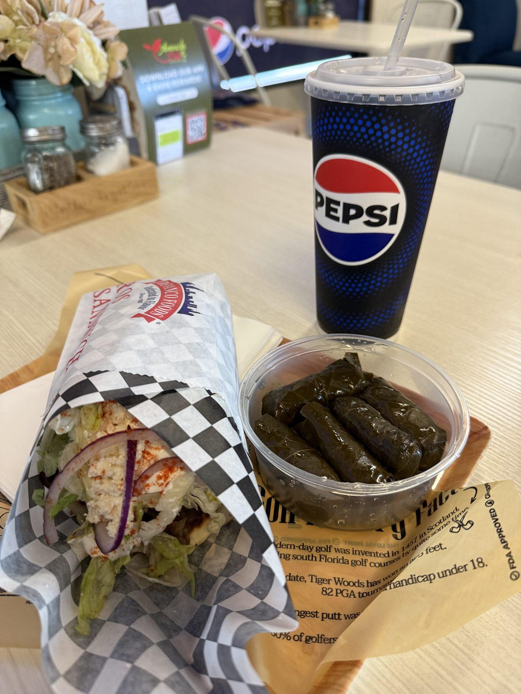
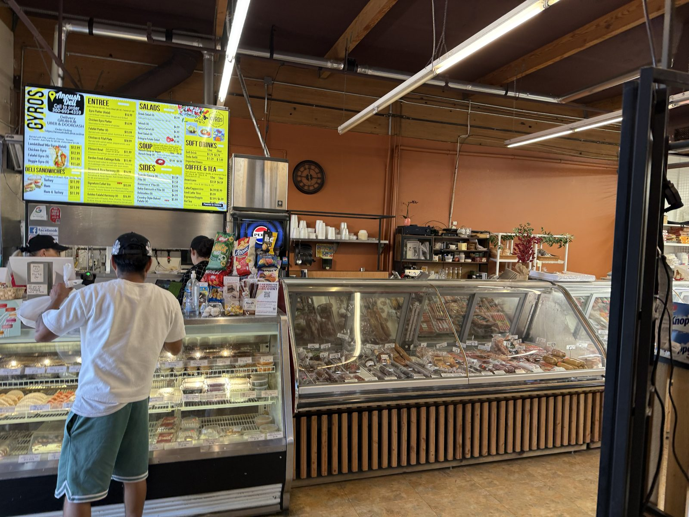
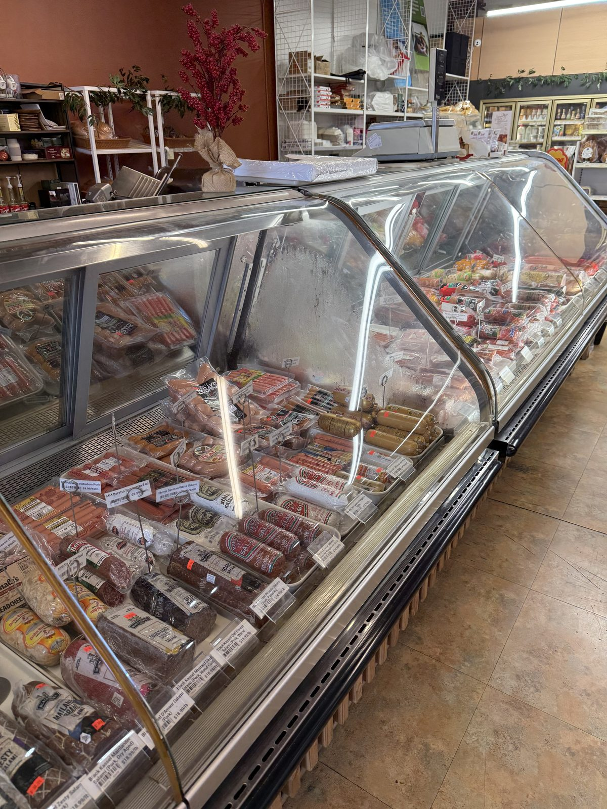
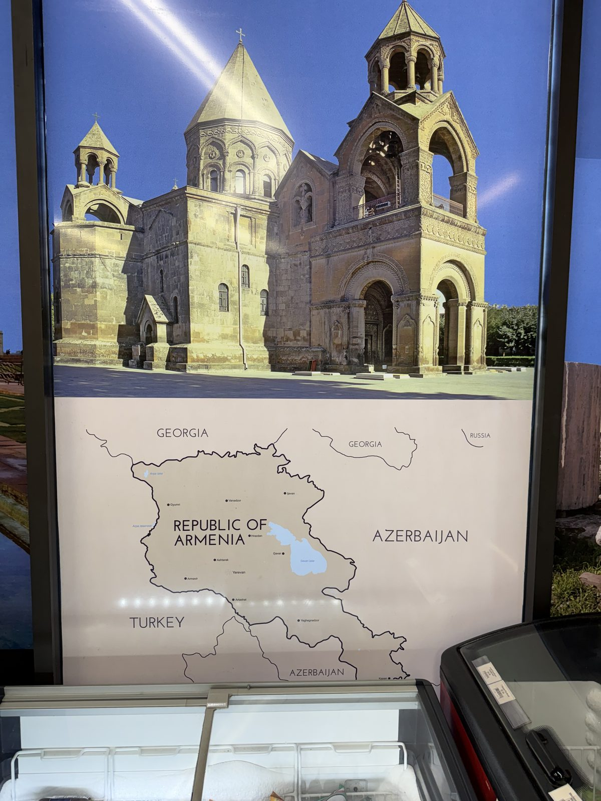
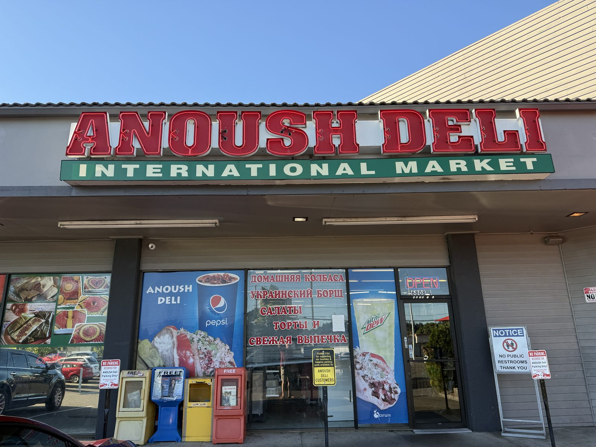
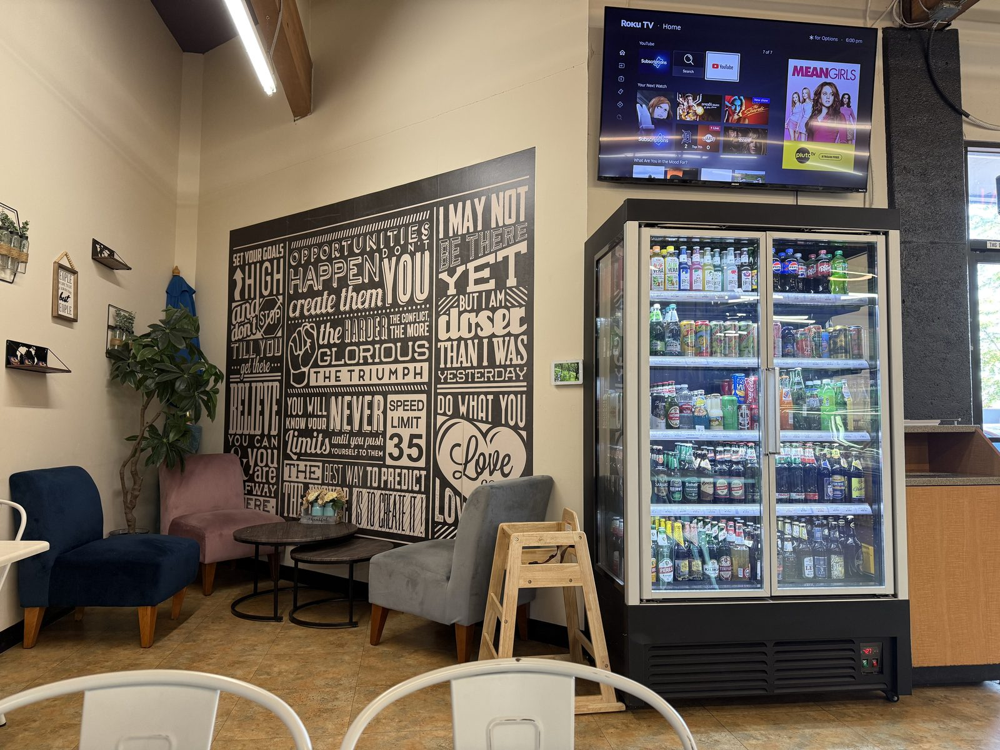

A Lamb and Beef Gyro, and a Request for Sunglasses

Dinner tonight was the Lamb and Beef Mix Gyro at Anoush Deli & International Market, on NE Fourth Plain Boulevard in Vancouver, Washington, ordered at the counter under a backlit menu board that just says GYROS in letters big enough to read from the parking lot. It's one of the meatier gyros I've had around here — maybe the meatiest — stuffed with a halal lamb-and-beef blend that's been on the grill long enough to pick up real char, and it comes with more food than one person has any business ordering. I ordered it anyway. I ate all of it anyway.
The gyro
The Lamb & Beef Mix Gyro (Halal) is $12.99, wrapped tight in checkered paper the way a good sandwich should be, and it does not skimp: shredded lettuce, sliced red onion, a real handful of crumbled feta, tzatziki worked all the way through rather than drizzled on top, and a dusting of what looks like sumac over the whole thing. The meat itself is the reason to order it — dense, well-seasoned, more lamb-forward than most beef-and-lamb blends manage, and there's enough of it that the wrap barely closes. Everything's built to order at the counter: pita, lettuce, onion, tomato and tzatziki come standard, and feta is a $1.99 add that is worth every dollar of it.

I also got a side of the dolmades — five stuffed grape leaves for $4.99, cool rather than warm, tightly rolled, rice rather than meat inside. Between those and a gyro that was already too big to finish comfortably, this was easily a two-sitting meal that I stubbornly ate in one. Nobody made me. That's on me.
Not just a gyro counter
What makes Anoush Deli worth knowing about is that the gyro board is only a third of what's happening in the building. It's a genuine international market — a long curved deli case runs most of one wall, packed with sausages, salami, and sliced cold cuts, and the window signage out front is in Cyrillic advertising homemade sausage and Ukrainian borscht, right next to the same menu screen selling gyros, falafel and pelmeni. The inside of the store leans Armenian — there's a poster of an Armenian cathedral over a map of the country by the freezer case — layered onto a broader Eastern European grocery. It's the kind of combination that only makes sense in a place with a lot of different immigrant communities shopping at the same store, and it means the menu board covers gyros, borscht, cabbage rolls and pelmeni dumplings without any of it feeling bolted on.


The neighborhood, honestly
I'll say the quiet part: this stretch of Fourth Plain is rough, and the parking lot makes you work for it — it's a shared strip-mall lot with its own hand-lettered No Parking, Reserved for Anoush Deli signs, which tells you something about how often other people's cars end up in those spots. I wasn't imagining the sketchy part, either. While I was standing in line waiting to order, a panhandler walked in off the street and asked me — not the cashier, me — to buy him a pair of sunglasses.
Would you buy me a pair of sunglasses?
I didn't. He left. The staff behind the counter didn't seem surprised, which tells you this wasn't a first. And then, oddly, the inside of the store is kind of pleasant — there's a small seating nook with velvet armchairs, a wall mural of motivational one-liners, a TV, and a cooler stocked with soda and imported beer, like someone decided the dining room should feel nothing like the parking lot outside it.


Is the gyro at Anoush Deli worth it?
Yes, if you're already in this part of Vancouver and you want a genuinely good, generously portioned gyro without much of a wait — the meat quality and the sheer amount of food on that $12.99 sandwich are the real story here, and the feta-and-tzatziki combo worked into the wrap is the detail that elevated it. It's not, for me, a place I'd cross town for the way I'd get in the car for Cactus Ya Ya — the lot is a hassle, and the block it's on isn't one I'd send someone out of their way for after dark. But as a stop when I'm already out this end of town, it's an easy yes, and I finished every bite I had no business finishing.
The practical bit
Anoush Deli & International Market — 6808 NE Fourth Plain Blvd, Ste L, Vancouver, WA 98661. 📍 Get directions
Hours: 10am–8pm, daily. Phone: (360) 693-4359.
Worth knowing: the Lamb & Beef Mix Gyro (Halal) is $12.99; chicken and falafel and veggie gyros run $11.49–$12.99. Feta is a $1.99 add-on. Sides include dolmades for $4.99. Parking is a shared strip-mall lot with signs reserving spots for the store — get there early if the lot looks full, and don't expect a lot of extra street parking on this stretch of Fourth Plain.